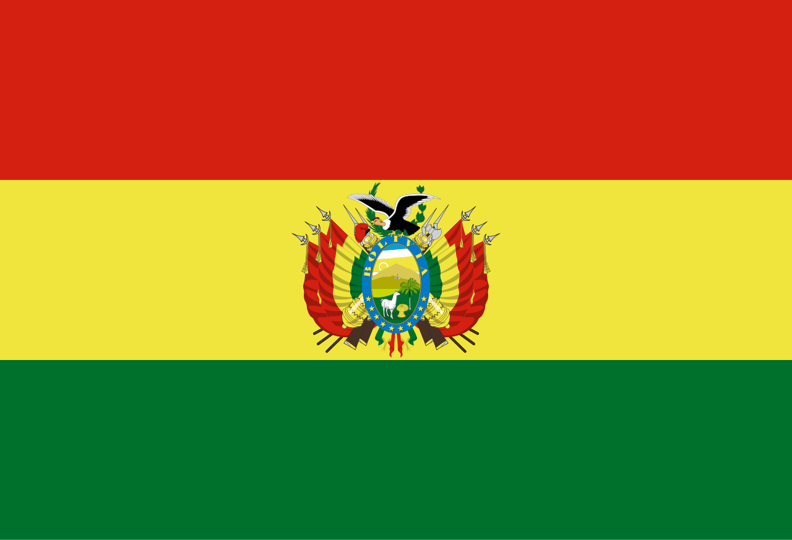
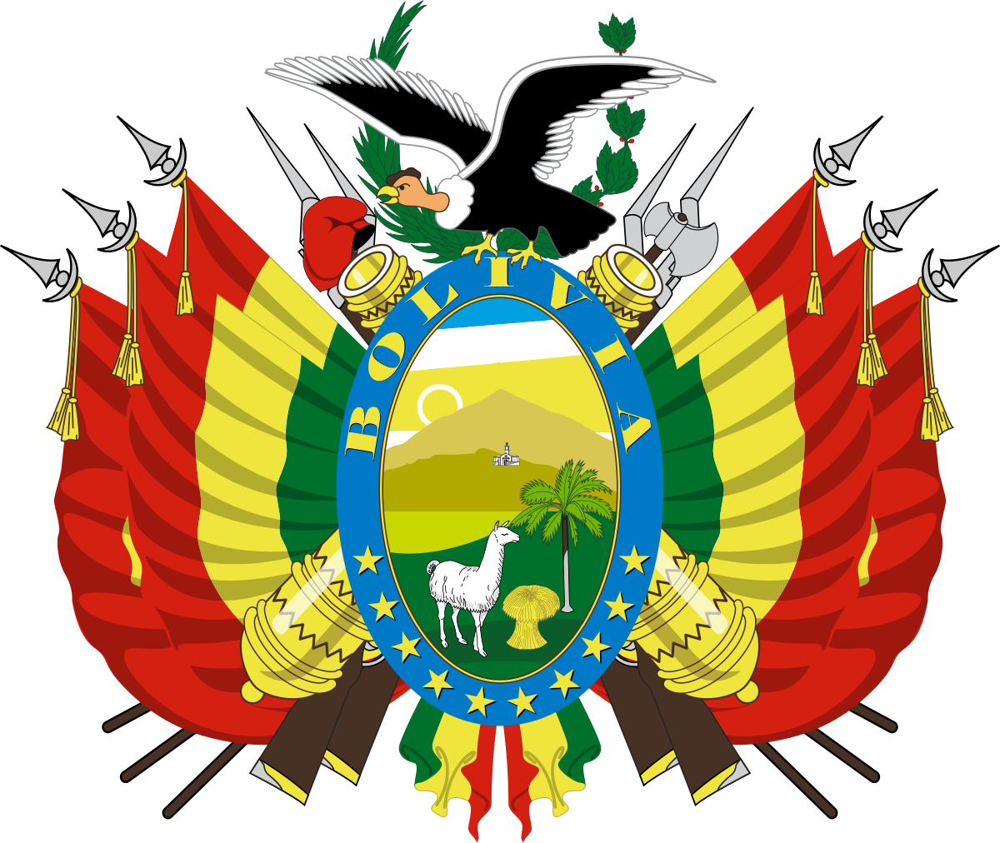

|
Bolivianos, el hado propicio
coronó nuestros votos y anhelo;
es ya libre, ya libre este suelo,
ya cesó su servil condición.
|
- Carnaval de Oruro
- Fiesta de San Juan
|

|
- El Salar mas grande del mundo
- Aguas Termales de Potosi
|
Al estruendo marcial que ayer fuera,
y al clamor de la guerra horroroso,
siguen hoy en contraste armonioso,
dulces himnos de paz y de unión.
|
- Danza de la Morenada
- El Somó Cruceño
|
|

|
- La feria de las alasitas
- Virgen de Guadalupe
|
De la patria, el alto nombre
en glorioso esplendor conservemos
y en sus aras de nuevo juremos
¡Morir antes que esclavos vivir!
|